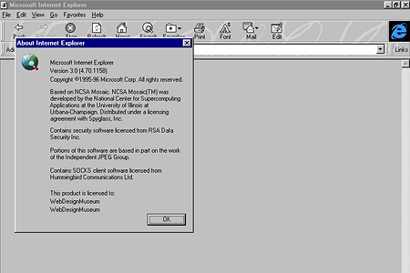

Es un navegador web gráfico que se anunció en marzo de 1996 y fue lanzado el 13 de agosto de 1996 por Microsoft para Microsoft Windows y el 8 de enero de 1997 para Apple Mac OS (ver IE para Mac). Comenzó una seria competencia contra Netscape Navigator en la primera guerra de los navegadores. Fue el primer lanzamiento de navegador de Microsoft con un importante componente de desarrollo interno. Fue la primera versión de Internet Explorer más utilizada, aunque no superó a Netscape ni se convirtió en el navegador con más cuota de mercado.
